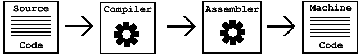

Next: Translations of the Term ``Free Software'', Previous: Freedom or Power?, Up: Top [Index]
This section is intended for people who have little or no knowledge of the technical aspects of computer science. It is not necessary to read this section to understand the essays and speeches presented in this book; however, it may be helpful to those readers not familiar with some of the jargon that comes with programming and computer science.
This note was originally published in Free Software, Free Society: Selected Essays of Richard M. Stallman, 1st ed. (Boston: GNU Press, 2002).
Written by Richard E. Buckman and Joshua Gay.
Copyright © 2002 Richard E. Buckman and Joshua Gay.
Verbatim copying and distribution of this entire chapter are permitted worldwide, without royalty, in any medium, provided this notice is preserved.
A computer programmer writes software, or computer programs. A program is more or less a recipe with commands to tell the computer what to do in order to carry out certain tasks. You are more than likely familiar with many different programs: your Web browser, your word processor, your email client, and the like.
A program usually starts out as source code. This higher-level set of commands is written in a programming language such as C or Java. After that, a tool known as a compiler translates this to a lower-level language known as assembly language. Another tool known as an assembler breaks the assembly code down to the final stage of machine language—the lowest level—which the computer understands natively.
For example, consider the “hello world” program, a common first program for people learning C, which (when compiled and executed) prints “Hello World!” on the screen. 55
int main(){
printf(''Hello World!'');
return 0;
}
In the Java programming language the same program would be written like this:
public class hello {
public static void main(String args[]) {
System.out.println(''Hello World!'');
}
}
However, in machine language, a small section of it may look similar to this:
1100011110111010100101001001001010101110 0110101010011000001111001011010101111101 0100111111111110010110110000000010100100 0100100001100101011011000110110001101111 0010000001010111011011110111001001101100 0110010000100001010000100110111101101111
The above form of machine language is the most basic representation known as binary. All data in computers is made up of a series of 0-or-1 values, but a person would have much difficulty understanding the data. To make a simple change to the binary, one would have to have an intimate knowledge of how a particular computer interprets the machine language. This could be feasible for small programs like the above examples, but any interesting program would involve an exhausting effort to make simple changes.
As an example, imagine that we wanted to make a change to our “Hello World” program written in C so that instead of printing “Hello World” in English it prints it in French. The change would be simple; here is the new program:
int main() {
printf(''Bonjour, monde!'');
return 0;
}
It is safe to say that one can easily infer how to change the program written in the Java programming language in the same way. However, even many programmers would not know where to begin if they wanted to change the binary representation. When we say “source code,” we do not mean machine language that only computers can understand—we are speaking of higher-level languages such as C and Java. A few other popular programming languages are C++, Perl, and Python. Some are harder than others to understand and program in, but they are all much easier to work with compared to the intricate machine language they get turned into after the programs are compiled and assembled.
Another important concept is understanding what an operating system is. An operating system is the software that handles input and output, memory allocation, and task scheduling. Generally one considers common or useful programs such as the Graphical User Interface (GUI) to be a part of the operating system. The GNU/Linux operating system contains a both GNU and non-GNU software, and a kernel called Linux. The kernel handles low-level tasks that applications depend upon such as input/output and task scheduling. The GNU software comprises much of the rest of the operating system, including GCC, a general-purpose compiler for many languages; GNU Emacs, an extensible text editor with many, many features; GNOME, the GNU desktop; GNU libc, a library that all programs other than the kernel must use in order to communicate with the kernel; and Bash, the GNU command interpreter that reads your command lines. Many of these programs were pioneered by Richard Stallman early on in the GNU Project and come with any modern GNU/Linux operating system.
It is important to understand that even if you cannot change the source code for a given program, or directly use all these tools, it is relatively easy to find someone who can. Therefore, by having the source code to a program you are usually given the power to change, fix, customize, and learn about a program—this is a power that you do not have if you are not given the source code. Source code is one of the requirements that makes a piece of software free. The other requirements will be found along with the philosophy and ideas behind them in this collection.
In other programming languages, such as Scheme, the Hello World program is usually not your first program. In Scheme you often start with a program like this:
(define (factorial n)
(if (= n 0)
1
(* n (factorial (- n 1)))))
This computes the factorial of a number; that is, running
(factorial 5)would output 120, which is computed by doing
5 * 4 * 3 * 2 * 1 * 1.
Next: Translations of the Term ``Free Software'', Previous: Freedom or Power?, Up: Top [Index]